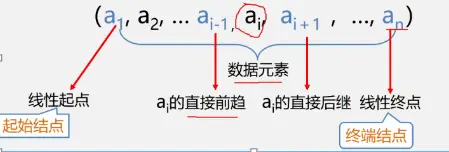
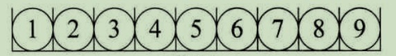
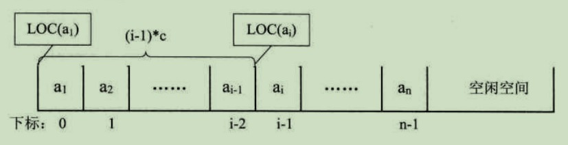
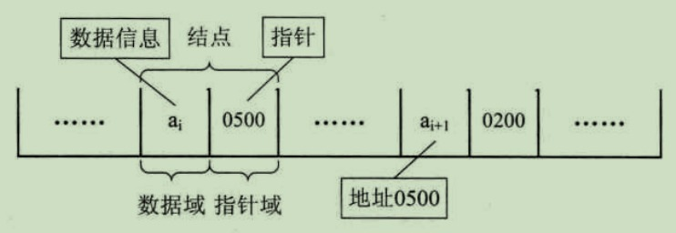
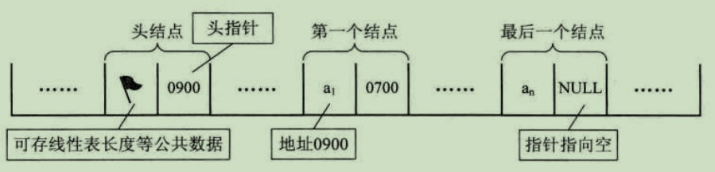

要点：线性表知识点汇总
一、线性表的定义
由n(n≥O)个数据特性相同的元素构成的有限序列称为线性表。

二、线性表的特点
1、线性表中元素的个数n(n≥O)定义为线性表的长度，n=O时称为空表。
2、将非空的线性表(n>O)记作(a1，a2，a3，…，an)；
3、这里的数据元素$a_i (1≤i≤n)$只是个抽象的符号，其具体含义在不同情况下可以不同；
4、在非空的线性表，有且仅有一个开始结点$a_1$,它没有直接前趋，而仅有一个直接后继；
5、有且仅有一个终端结点$a_n$,它没有直接后继，而仅有一个直接前趋$a_n-1$；
6、其余的内部结点$a_i$,(2<i<n-1)都有且仅有一个直接前趋$a_i-1$和一个直接后继$a_i+1$ 。
线性表的例子:
26个英文字母的字母表：(A, B, C, …，Z)；学生信息表；12星座。
同一线性表中的元素必定具有相同的特性，数据元素之间关系是线性的。
三、线性表的顺序存储结构
3.1 定义
是用一段地址连续的存储单元依次存储线性表的数据元
3.2 顺序存储示意图如下所示

3.3 编号地址
存储器中的每个存储单元都有自己的编号，这个编号称为地址
3.4 存储位置公式
每个数据元素，不管它是整型，实型还是字符型，它都是需要占用一定的存储单元空间的。
假设占用的是 c 个存储单元，那么对于线性表的第 i 个数据元素 $a_i$ 的存储位置都可以由 $a_1$ 推导算出：
$LOC(a_i) = LOC(a_1) + (i - 1) * c$
3.5 存取操作时间性能
上述推导公式具体内容如下图所示:

通过该公式，就可以随时算出线性表中任意位置的地址；
不管是第一个还是最后一个，都是相同的时间，也即对于线性表每个位置的存入或者取出数据，对于计算机来说都是相等的时间，也就是一个常数时间。
因此，线性表的存取操作时间性能为 $O(1)$
3.6 随机存储结构
我们通常将存取操作具备常数性能（$O(1)$）的存储结构称为随机存储结构
3.7 时间复杂度
对于存取操作
线性表的顺序存储结构，对于存取操作，其时间复杂度为 $O(1)$，因为元素位置可以直接计算得到
对于插入和删除操作
对于插入和删除操作，其时间复杂度为 $O(n)$，因为插入或删除后，需要移动其余元素
3.8 使用场景
线性表顺序存储结构比较适用于元素存取操作较多，增删操作较少的场景
四、线性表的链式存储结构
4.1 什么是链表
一个或多个结点组合而成的数据结构称为链表
4.2 结点
结点 一般由两部分内容构成：
数据域：存储真实数据元素
指针域：存储下一个结点的地址（指针）

4.3 头指针&头结点
头结点的数据域可以不存储任何信息，其指针域存储指向第一个结点的指针（即指向头指针）
头指针
一般把链表中的第一个结点称为 头指针，其存储链表的第一个数据元素
头结点
为了能更加方便地对链表进行操作，会在单链表的第一个结点（即头指针）前附设一个结点，称为 头结点

4.4 单链表
在线性表的顺序存储结构（即数组）中，其任意一个元素的存储位置可以通过计算得到，因此其数据读取的时间复杂度为 $O(1)$
单链表的时间复杂度
对于存取操作
对于单链表结构，假设需要获取第 i 个元素，则必须从第一个结点开始依次进行遍历，直到达到第 i 个结点。因此，对于单链表结构而言，其数据元素读取的时间复杂度为 $O(n)$
对于插入和删除操作
对单链表结构来说，对其任意一个位置进行增删操作，其时间复杂度为 $O(n)$
因为需要先进行遍历找到目标元素，对头指针的增删操作其时间复杂度为 $O(1)$
4.5 线性表和单链表比较
如果只对一个元素进行增删操作，两种结构并不存在优劣之分，但如果针对多个数据进行增删，由于线性表每一次增删都需要移动 n-i 个元素，即每个元素的操作都为 $O(n)$
而单链表只在第一次遍历定位目标元素时为$O(n)$，对后续元素的增删只需简单地赋值移动指针即可，其时间复杂度为 $O(1)$
总结：对于插入或删除数据越频繁的操作，单链表的效率就越明显
4.6 循环链表
将单链表中的终端结点的指针端由空指针改为指向头结点，就使整个单链表形成一个环；
这种头尾相接的单链表称为单循环链表，简称 循环链表（circular linked list）
循环链表不一定需要头结点
4.7 单链表和循环链表的区别
为了使空链表与非空链表处理一致，我们通常设一个头结点（循环链表不一定需要头结点）
主要差异就在于循环的判断条件上
单链表判断条件
尾结点是否指向空：
1 | p->next = NULL |
循环链表判断条件
当前结点是否指向头结点：
1 | p->next = head |
是则当前结点为尾结点
4.8 双向链表
双向链表（double linked list）：在单链表的每个结点中，再设置一个指向其前驱结点的指针域
Tips: Please indicate the source and original author when reprinting or quoting this article.